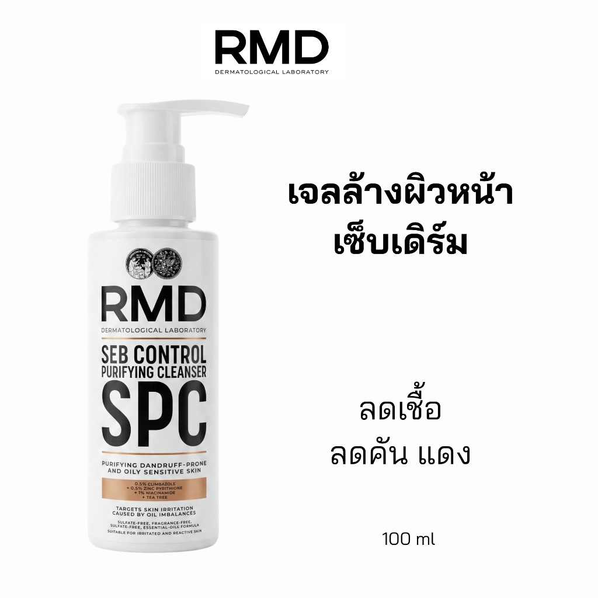
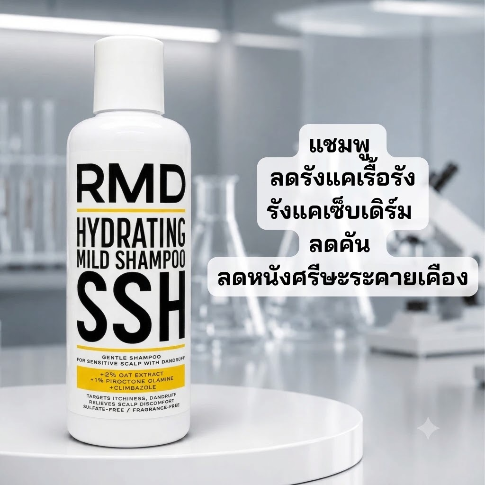
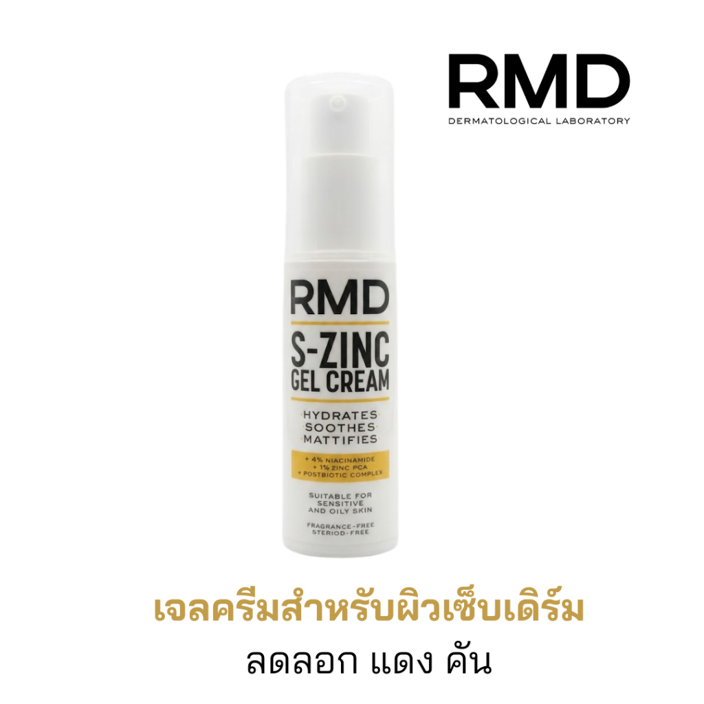
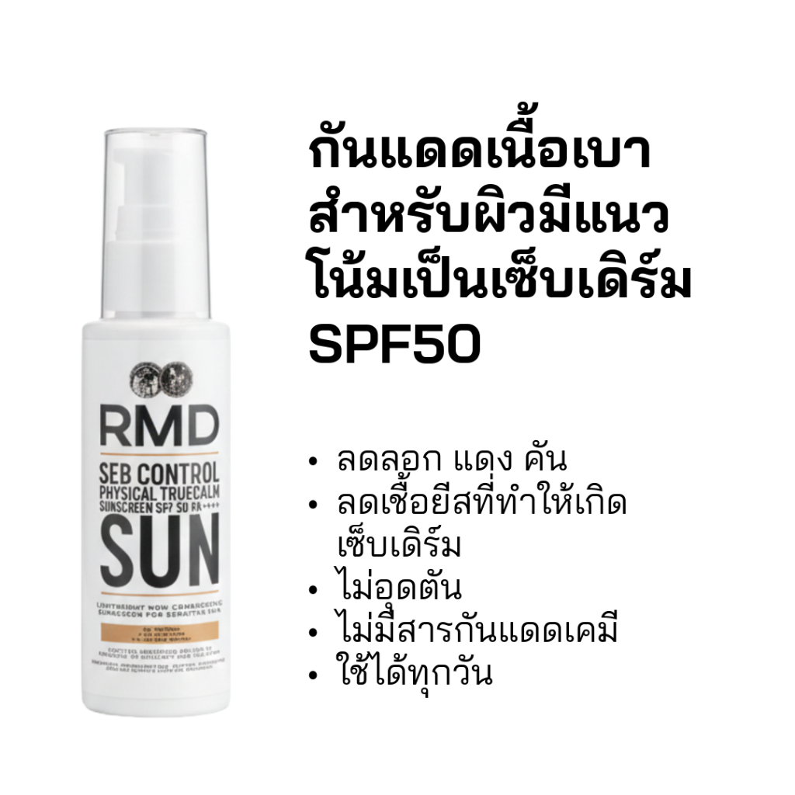
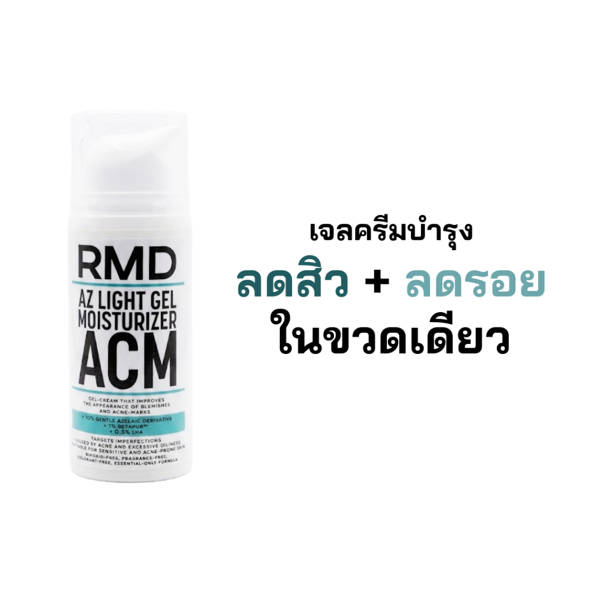
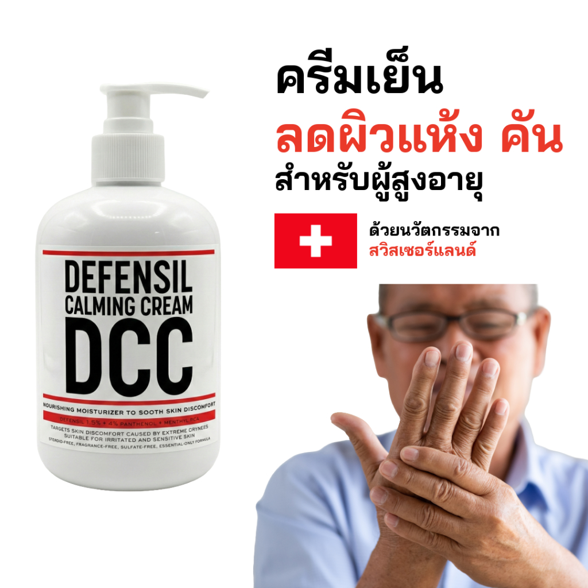
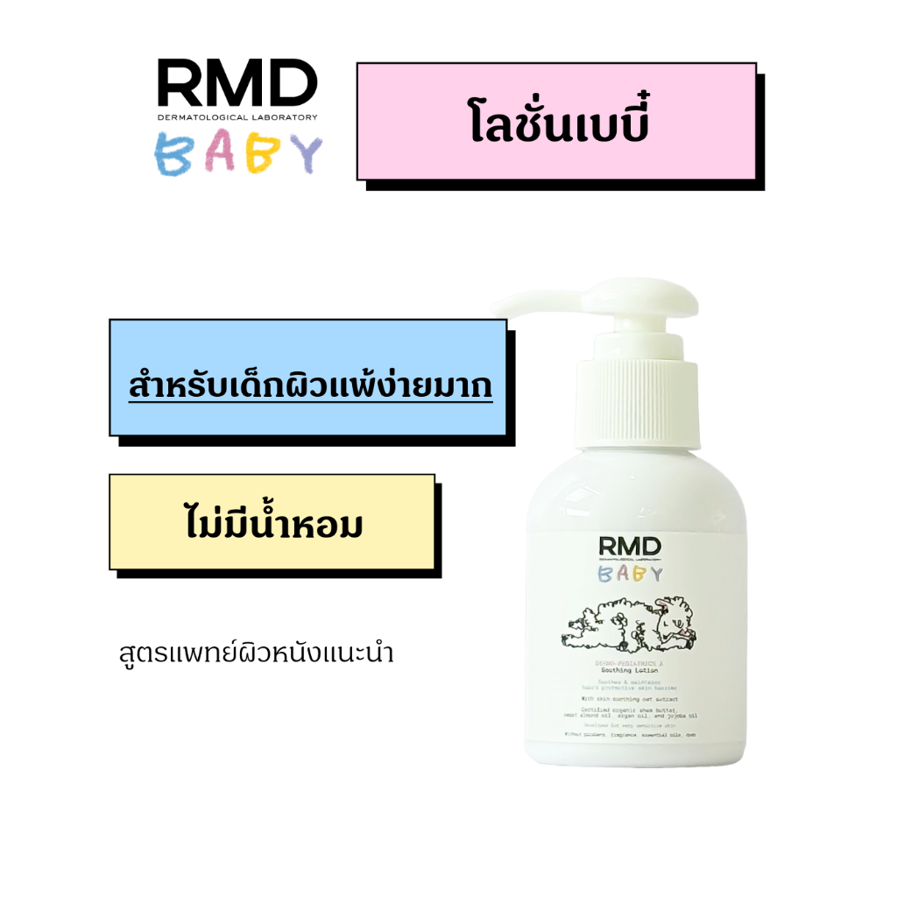
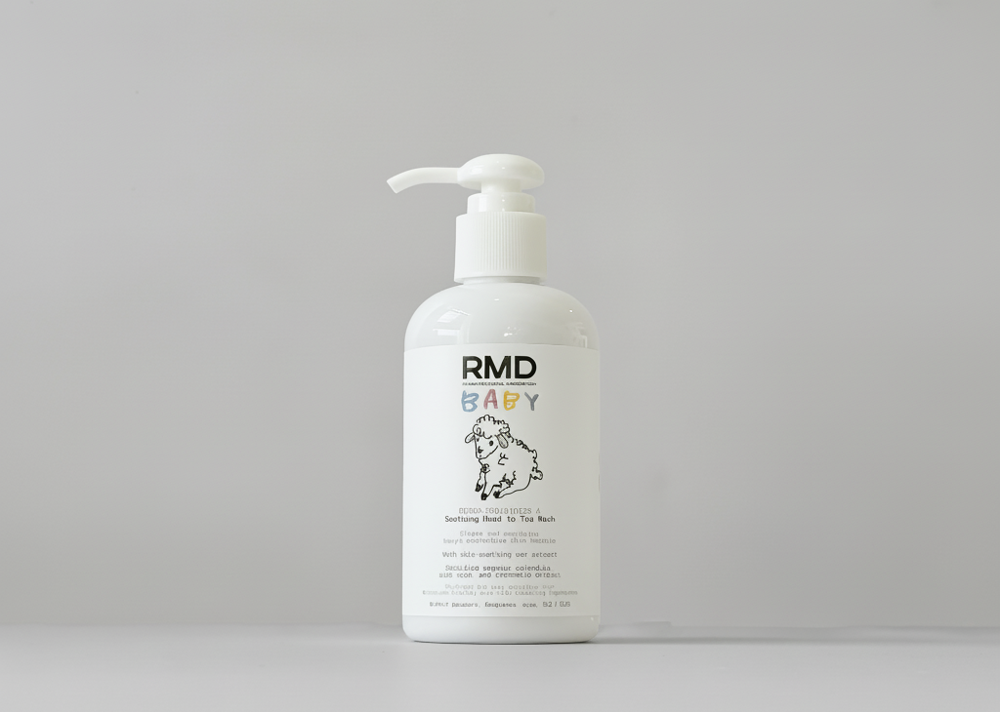

RMD Dermatological Laboratory · Onboarding
คู่มือพนักงานใหม่
อ้างอิงจาก rmd-skin.com · Shopee shop 119523214 · ฐานข้อมูล อย. (porta.fda.moph.go.th)
SECTION 01 เซ็บเดิร์มคืออะไร?
เซ็บเดิร์ม (Seb Derm) ย่อจาก Seborrheic Dermatitis —
ภาษาไทยเรียก “โรคผิวหนังอักเสบจากต่อมไขมัน” หรือ “ผื่นแพ้ต่อมไขมัน” เรื้อรัง ในบริเวณที่ผิวมันมาก · อาการเด่น =
แดง · ลอกเป็นขุย · คัน · มัน · และ กลับมาเป็นซ้ำ
รูปที่ 1 · เซ็บเดิร์มเกิดจาก 3 อย่างพร้อมกัน
1
2
3
เชื้อยีสต์โตเกิน
Malassezia บนผิวทุกคน
แต่คนเป็นเซ็บเดิร์ม
ตอบสนองไวผิดปกติ
ผิวมันเกิน
น้ำมันผิว = อาหารของ
เชื้อยีสต์
ยิ่งมัน ยิ่งเลี้ยงเชื้อ
เกราะผิวอ่อนแอ
ผิวรั่ว ระคายเคืองง่าย
แดงง่าย
เชื้อยิ่งโตง่ายขึ้นอีก
➜ ครีมธรรมดาแก้ได้แค่ข้อเดียว จึงไม่หาย · ต้องแก้ครบทั้ง 3
นี่คือเหตุผลว่าทำไมสินค้า RMD ทุกตัวต้องมี “ตัวลดเชื้อ + ตัวคุมมัน/ฟื้นเกราะ + ตัวลดอักเสบ” อยู่ในขวดเดียว
รูปที่ 2 · วงจรที่ทำให้ “หายแล้วกลับมาอีก”
ผิวมัน
ร้อนชื้น · เครียด · นอนน้อย
เชื้อยีสต์โต
Malassezia กินน้ำมัน
อักเสบ · แดง · คัน
ลอกเป็นขุย
เกราะผิวพัง
ยิ่งไวต่อการระคายเคือง
วนไม่จบ
ต้องบอกลูกค้าเสมอ: เป้าหมายคือ “คุมให้อยู่” ไม่ใช่ “หายขาด” — ต้องใช้ต่อเนื่องแม้ช่วงผิวสงบ ห้ามหยุดทันทีที่ดีขึ้น
รูปที่ 3 · เป็นตรงไหนได้บ้าง — จุดที่ต้องถามลูกค้า
หนังศีรษะ · ไรผม
รังแคหนา สีเหลือง มัน คัน — พบบ่อยที่สุด
หัวคิ้ว · ระหว่างคิ้ว
แดง ลอกเป็นขุยขาว
ข้างจมูก (ร่องแก้ม)
จุดคลาสสิกที่สุดของเซ็บเดิร์มบนหน้า
แนวหนวดเครา
ผู้ชายที่โกนหนวดยิ่งเห่อง่าย
หลังใบหู
อับชื้น ลอกหนัก เรื้อรัง — ลูกค้ามักลืมบอก
ลำตัว:
กลางหน้าอก · แผ่นหลัง (บริเวณที่มีต่อมไขมันเยอะ)
เวลาลูกค้าทักมา ให้ถามครบทุกจุด — หลายคนบอกแค่ “หน้าลอก” แต่จริง ๆ เป็นหนังศีรษะ + หลังหูด้วย = ต้องขายเป็นเซ็ต
ตัวกระตุ้นให้กำเริบ
เซ็บเดิร์ม ≠ ผิวแพ้ง่ายธรรมดา ลดเชื้อ + คุมมัน/ฟื้นเกราะ + ลดอักเสบ พร้อมกัน
ขาดข้อใดข้อหนึ่ง = ดีขึ้นช้า หรือดีขึ้นไม่สุด
SECTION 02 สิวผด — Malassezia Folliculitis โอกาสขายที่ใหญ่ที่สุด
สิวผด (ชื่อทางการ: Malassezia Folliculitis หรือ
Pityrosporum folliculitis · ฝรั่งเรียก Fungal Acne ) —
คือ เชื้อยีสต์ Malassezia ตัวเดียวกับเซ็บเดิร์ม แต่ลงไปโตอยู่ ในรูขุมขน
ทำให้รูขุมขนอักเสบ ขึ้นเป็นตุ่มเล็ก ๆ เต็มไปหมด
ทำไมข้อนี้สำคัญกับเราที่สุด
คนเป็นสิวผดมักจะ รักษาสิวมาหลายปีแล้วไม่หาย เพราะไปใช้ยาฆ่าแบคทีเรีย
แต่ต้นเหตุจริงคือเชื้อรา — พอเรารู้ทัน แล้วอธิบายให้เขาฟังได้ เขาจะเชื่อเราทันที
และ คลีนเซอร์ SPC ของเราคือคำตอบตรง ๆ ของปัญหานี้
รูปที่ 4 · สิวผด (เชื้อรา) ต่างจากสิวธรรมดา (แบคทีเรีย) ยังไง
สิวผด (เชื้อรา)
สิวธรรมดา (แบคทีเรีย)
ตุ่มเล็ก ขนาดเท่ากันหมด เรียงเป็นกลุ่ม
ขนาดไม่เท่ากัน มีหัวดำ/หัวขาวปน
ต้นเหตุ
เชื้อยีสต์ Malassezia
แบคทีเรีย C. acnes
อาการคัน
คันมาก ★ จุดสังเกตสำคัญที่สุด
ไม่คัน (เจ็บมากกว่า)
หัวสิว
ไม่มีหัวดำ/หัวขาว
มีหัวดำ หัวขาว หนอง
ตำแหน่ง
หน้าผาก ไรผม แก้ม · หน้าอก แผ่นหลัง ต้นแขน
T-zone คาง กราม
กระตุ้นโดย
เหงื่อ อับชื้น เสื้อรัด ยาปฏิชีวนะ
ฮอร์โมน การอุดตัน
ยาสิวทั่วไป
ไม่หาย · บางทีแย่ลง
ได้ผล
คำถามคัดกรองที่ใช้ได้เลย: “ตุ่มที่ขึ้น คันไหมคะ ? แล้วขนาดเท่า ๆ กันทุกเม็ดหรือเปล่า? ขึ้นที่หลัง/หน้าอกด้วยไหม?” — ถ้าตอบ “ใช่” ทั้ง 3 ข้อ = สิวผด
ทำไมใช้ยาสิวแล้วไม่หาย (แถมบางทีแย่ลง)
ยาปฏิชีวนะฆ่าแบคทีเรีย ไม่ฆ่าเชื้อรา — สิวผดเกิดจากยีสต์ ยาจึงไม่โดนเป้ายิ่งกินยาปฏิชีวนะนาน ๆ ยิ่งแย่ — แบคทีเรียดี ๆ บนผิวถูกฆ่าไปด้วย เชื้อยีสต์เลยไม่มีคู่แข่ง โตได้สบายขึ้นครีมบำรุงส่วนใหญ่ “เลี้ยงเชื้อ” — น้ำมันหลายชนิด (มะพร้าว, olive, เอสเทอร์บางตัว) เป็นอาหารของ Malassezia โดยตรงผลัดเซลล์อย่างเดียวไม่พอ — AHA/BHA ช่วยลดการอุดตัน แต่ไม่ได้ลดจำนวนเชื้อ
ทำไมสินค้า RMD ตอบโจทย์สิวผด Talking Point
SPC Cleanser — ตัวเอกของเคสนี้
Zinc Pyrithione 0.5% + Climbazole 0.5% = ลดเชื้อยีสต์โดยตรง ซึ่งคือต้นเหตุจริงของสิวผดTea Tree / Terpinen-4-ol 0.5% = ต้าน C. acnes ด้วย → เผื่อเคสที่เป็น
ทั้งสิวธรรมดาและสิวผดพร้อมกัน (พบบ่อยมาก) จบในขวดเดียวใช้ได้ทั้งลำตัว ← จุดขายที่คู่แข่งส่วนใหญ่ไม่มี
สิวผดมักขึ้นที่ หน้าอก แผ่นหลัง ต้นแขน แต่คลีนเซอร์ทั่วไปเป็นสูตรสำหรับหน้าเท่านั้นทิ้งไว้ 30 วิ–2 นาที = สารออกฤทธิ์ได้ทำงานจริง ไม่ใช่แค่ล้างผ่านไม่มีน้ำหอม ไม่มีสบู่/ซัลเฟต = ไม่ทำให้ผิวมันตอบสนอง (rebound) ซึ่งจะยิ่งเลี้ยงเชื้อ
S-Zinc Gel Cream — มอยส์เจอไรเซอร์ที่ “ไม่เลี้ยงเชื้อ”
Piroctone Olamine 0.5% — คุมเชื้อต่อเนื่องทั้งวัน หลังจากคลีนเซอร์ล้างออกไปแล้วZinc PCA 1% — ลดน้ำมัน = ตัดอาหารของเชื้อNiacinamide 4% — ลดอักเสบของทั้งสิวธรรมดาและสิวผด + ฟื้นเกราะผิวPostbiotic Complex — ปรับสมดุลจุลินทรีย์ ไม่ให้ยีสต์กลับมาครองผิวอีกเนื้อเจลบางเบา ไม่อุดตัน
SSH Shampoo — สำหรับสิวผดที่หนังศีรษะ/ไรผม
คนที่ขึ้นตุ่มคันตามไรผมและหลังคอ มักเป็นสิวผดที่หนังศีรษะ — สระด้วย SSH 2–3 ครั้ง/สัปดาห์
ประโยคปิดการขาย:
“ถ้าเป็นสิวมานานแล้วยาสิวไม่หาย แล้วมันคัน ๆ ด้วย — ส่วนใหญ่ไม่ใช่สิวค่ะ เป็นสิวผดจากเชื้อยีสต์
ต้องใช้ตัวที่ลดเชื้อยีสต์โดยตรง ซึ่งคือคลีนเซอร์ SPC ของเรา และใช้ได้ทั้งหน้าและแผ่นหลังเลยค่ะ”
สิ่งที่ห้ามพูด: ห้ามบอกว่า “รักษาหาย” หรือ “ทดแทนยา” — เราเป็นเครื่องสำอาง ไม่ใช่ยา
ให้พูดว่า “ช่วยดูแล / ช่วยลด / ช่วยควบคุม” และถ้าอาการรุนแรงให้แนะนำพบแพทย์ผิวหนัง
SECTION 03 ทำไมสบู่และซัลเฟตทำร้ายผิวเซ็บเดิร์ม
ทุกครั้งที่เราเคลม “ไม่มีสบู่ ไม่มีซัลเฟต” ต้องอธิบายได้ว่าทำไมมันสำคัญ —
ไม่งั้นลูกค้าจะมองว่าเป็นแค่คำโฆษณา นี่คือ 4 เหตุผลที่ใช้ได้จริง
รูปที่ 5 · เหตุผลที่ 1 — ค่า pH
3
4
5
6
7
8
9
10
ผิวคนปกติ
pH 4.7–5.5 (กรดอ่อน)
= “Acid Mantle” เกราะกรดที่กันเชื้อ
RMD อยู่ตรงนี้
สบู่ก้อน pH 9–10
ด่างแรง — ทำลาย acid mantle
พอผิวถูกดันขึ้นไปเป็นด่าง เอนไซม์ที่ซ่อมเกราะผิวจะทำงานไม่ได้ และ เชื้อ Malassezia ชอบสภาพ pH ที่สูงขึ้น — เท่ากับล้างหน้าทีเดียวช่วยเชื้อ 2 ต่อ
รูปที่ 6 · เหตุผลที่ 2 — ซัลเฟตชะล้างไขมันผิวออกไปด้วย
เกราะผิวปกติ
อิฐ = เซลล์ผิว · ปูน = เซราไมด์/ไขมัน
✓ กันน้ำระเหยออก ✓ กันเชื้อและสารระคายเข้า
หลังใช้สบู่/ซัลเฟต
ปูนถูกชะออก → เกิดช่องว่าง
✗ น้ำระเหยออก (ผิวแห้ง) ✗ เชื้อและสารระคายเข้าได้
ผลตามมา (Rebound Oil):
ผิวแห้ง → ต่อมไขมันผลิตน้ำมันชดเชย “มากกว่าเดิม” → เลี้ยงเชื้อ Malassezia → เห่อหนักกว่าเก่า
นี่คือคำตอบของคำถามยอดฮิต: “ทำไมยิ่งล้างหน้าให้สะอาด หน้ายิ่งมันและยิ่งลอก?”
4 เหตุผลเต็ม — สรุปสั้นที่ใช้ตอบลูกค้าได้เลย
แล้ว RMD ใช้อะไรแทน? เหนือคู่แข่งตรงนี้
Cocamidopropyl Betaine — สารชำระล้างกลุ่ม amphoteric อ่อนโยน
ฟองนุ่ม ไม่ดึงไขมันผิวออกมากเกินSodium Cocoyl Isethionate — จากมะพร้าว ฟองครีมมี่ ค่า pH ใกล้เคียงผิว
เป็นตัวเดียวกับที่ใช้ในสบู่ syndet เกรดผิวแพ้ง่ายDecyl Glucoside (ในแชมพูสูตรใหม่) — non-ionic จากน้ำตาล + มะพร้าว
อ่อนโยนที่สุดกลุ่มหนึ่ง ใช้ในสูตรเด็กทารกทั้งหมด ไม่มีน้ำหอม ไม่มีแอลกอฮอล์ ไม่มีพาราเบน ไม่มีสีสังเคราะห์
ประโยคเทียบคู่แข่ง: “แชมพูขจัดรังแคทั่วไปในตลาดใช้ซัลเฟตเพราะฟองเยอะและถูก
แต่ผิวเซ็บเดิร์มเกราะพังอยู่แล้ว ยิ่งล้างแรงยิ่งพัง ของเราเลยเลือกสารชำระล้างอ่อนโยนแทน
ฟองน้อยกว่าหน่อยแต่ผิวไม่พังค่ะ”
SECTION 04 ภาพรวมสินค้า + เลขที่ใบรับแจ้ง อย.จำหน้าตาขวดก่อน — ทุกตัวใช้ รหัสสั้น ๆ บนขวด (SPC · SSH · S-ZINC · SUN) · ไลน์เซ็บเดิร์มมี 4 ตัว

SPC
฿329 · 100 ml
คลีนเซอร์ · หน้า+ลำตัว

SSH
฿359 · 200 ml
แชมพู · หนังศีรษะ

S-ZINC
฿550 · 30 g
มอยส์เจอไรเซอร์ · ผิวมัน

SUN
฿359 · SPF50 PA++++
กันแดด · Physical
เลขที่ใบรับแจ้ง อย. (ตรวจสอบจากฐานข้อมูล อย. แล้ว)
เลขเก่าของ S-Zinc ถูกยกเลิกและออกเลขใหม่แล้ว (12-1-6800036257) —
ถ้าลูกค้าถามเลข อย. ให้ใช้เลขใหม่เท่านั้น · ตรวจสอบได้ที่ porta.fda.moph.go.th
ตารางเปรียบเทียบสินค้า
SECTION 04B สินค้าอื่น ๆ ทั้งหมดในแบรนด์
นอกจากไลน์ SEB CONTROL แล้ว RMD ยังมีอีก 4 ตัว ที่ต้องรู้จัก —
เพื่อจะได้ ไม่แนะนำผิดตัว และ ขายต่อยอดได้ เวลาลูกค้าถามถึงปัญหาอื่น
รูปที่ 7 · แบรนด์ RMD ทั้งหมด — แบ่งตาม 3 กลุ่มปัญหา
SEB CONTROL
เซ็บเดิร์ม · รังแค · สิวผด
SPC Cleanser คลีนเซอร์ หน้า+ลำตัว · ฿329
S-Zinc Gel Cream มอยส์เจอไรเซอร์ · ฿550
SUN Sunscreen SPF50 PA++++ · ฿359
SSH Shampoo แชมพูหนังศีรษะ · ฿359
RMD BABY
เด็ก · ทารก · ผิวแพ้ง่าย
Dermo-Pediatrics A Lotion โลชั่นบำรุง 100 ml · ฿349
Head to Toe Wash เจลอาบน้ำ+สระผม 200 ml · ฿369
ปัญหาผิวอื่น ๆ
สิว · ผิวแห้งคันผู้สูงอายุ
AZ Light Gel ACM สิว + รอยสิว · ฿409
Defensil Calming Cream DCC ครีมเย็น ผิวแห้งคัน · ฿349
ระวังอย่าสับสน: AZ Light Gel = สิวธรรมดา/รอยสิว
ไม่ใช่ตัวสำหรับเซ็บเดิร์มหรือสิวผด — ถ้าลูกค้าคันด้วย ให้ไป SPC + S-Zinc
ทั้งหมด 8 รายการ · ขายบน Shopee 7 ตัว (Head to Toe Wash ยังมีเฉพาะบนเว็บ)

AZ Light Gel ACM
฿409
สิว + รอยสิว

Defensil DCC
฿349
ครีมเย็น · ผิวแห้งคันผู้สูงอายุ

Dermo-Pediatrics A Lotion
฿349 · 100 ml
โลชั่นเด็ก/ทารกผิวแพ้ง่าย

Head to Toe Wash
฿369 · 200 ml
เจลอาบน้ำ+สระผม เด็ก
AZ LIGHT GEL MOISTURIZER (ACM) สิว — ไม่ใช่เซ็บเดิร์ม
เจลครีมบำรุง “ลดสิว + ลดรอย ในขวดเดียว”
ตำแหน่ง: เจลครีมเนื้อบางเบาสำหรับ ผิวเป็นสิวและมีรอยสิว · ฿409
สารสำคัญ + ประโยชน์
Potassium Azeloyl Diglycinate 10% (อนุพันธ์ Azelaic ที่ละลายน้ำ) —
ดูแลรอยสิว ผิวหมองคล้ำ ลดการอักเสบของสิวBETAPUR 1% (สารสกัดใบโบลโด — Peumus Boldus จาก BASF) —
กระตุ้นให้ผิวสร้าง β-defensin ซึ่งเป็นเปปไทด์ต้านเชื้อของผิวเอง
→ ปรับสมดุลจุลินทรีย์ ลดสิว ลดมัน รูขุมขนดูเล็กลง
(งานวิจัยระบุว่าเห็นผลใน 4 สัปดาห์) Capryloyl Salicylic Acid (LHA) 0.5% — กรดผลัดเซลล์สายอ่อนโยน
ทำงานที่ปากรูขุมขน ระคายเคืองน้อยกว่าซาลิไซลิกทั่วไปTrueCalm Complex — สารสกัดพืช 6 ชนิด (ตัวเดียวกับที่อยู่ในกันแดด SUN)
ลดอักเสบ ต้านอนุมูลอิสระ กันผิวแห้งตึงจากกรด
⚠️ ห้ามแนะนำตัวนี้ให้คนเป็นเซ็บเดิร์มหรือสิวผด —
ตัวนี้ไม่มีสารลดเชื้อ Malassezia เลย และมี Paraffinum Liquidum + เอสเทอร์ที่ไม่ได้เป็น fungal-acne safe
· ถ้าลูกค้าบอกว่า “ตุ่มคัน” ให้ไป SPC + S-Zinc เสมอ
RMD BABY — Dermo-Pediatrics A เด็ก · ผิวแพ้ง่าย
Head to Toe Wash — 200 ml · ฿369
1 · A Soothing Lotion — 100 ml · ฿349 (เต็ม ฿390) · อย. 67-1-6800024882
Oat Extract 5% — ปลอบประโลม ลดการอักเสบของผิวAloe Vera ออร์แกนิค 2% — เติมความชุ่มชื้น ลดรอยแดงSweet Almond + Shea Butter + Jojoba (ออร์แกนิค) — ฟื้นฟูไขมันผิว เสริมเกราะผิวไม่มีน้ำหอม ไม่มีพาราเบน ไม่มีซิลิโคน · ใช้ได้ตั้งแต่แรกเกิด · ใช้ได้ทั้งหน้าและกาย
2 · A Head to Toe Soothing Wash — 200 ml · ฿369
Decyl Glucoside + Cocamidopropyl Betaine — สารชำระล้างจากธรรมชาติ
ไม่มี SLS/SLES ไม่ทำลายสมดุลผิวOat Extract 2% — ลดคัน ลดการลอกของผิวOrganic Calendula & Chamomile 2.5% — ลดการระคายเคือง ผิวนุ่มหลังอาบน้ำSeaweed Extract 5% — ผิวและผมนุ่มหลังล้าง เสริมความแข็งแรงผิวอัญชัน (Clitoria Ternatea) + ซากุระ (Prunus Serrulata) — ต้านอนุมูลอิสระใช้ได้ทั้งอาบน้ำและสระผม
เชื่อมโยงที่ต้องรู้: สูตรของ Head to Toe Wash กับ SSH Shampoo สูตรใหม่
เกือบเหมือนกันเลย (Decyl Glucoside · Cocamidopropyl Betaine · อัญชัน · Seaweed · Oat · Calendula · Chamomile)
— ต่างกันตรงที่ SSH เติม Piroctone Olamine + Climbazole + Zinc PCA เข้าไปประโยคขายที่แข็งมาก: “แชมพูเซ็บเดิร์มของเราใช้เบสเดียวกับสูตรอาบน้ำเด็กทารกเลยค่ะ
อ่อนโยนขนาดนั้น แค่เติมตัวลดเชื้อเข้าไป”
DEFENSIL CALMING CREAM (DCC) ผู้สูงอายุ · ผิวแห้งคัน
ครีมเย็น ลดผิวแห้ง คัน ลอก ในผู้สูงอายุ · ฿349
ตำแหน่ง: ครีมเนื้อเย็นสำหรับ ผิวแห้ง คัน ลอก ในผู้สูงอายุ
(ภาวะ xerosis / senile pruritus ที่ผิวผลิตไขมันน้อยลงตามอายุ) · ฿349 · คะแนน 5.0
ใช้เมื่อไหร่
ลูกค้าซื้อให้พ่อแม่/ผู้สูงอายุที่บ่นว่า คันตามตัว แห้ง ลอกเป็นขุย โดยเฉพาะหน้าแข้งและแขน
คนละปัญหากับเซ็บเดิร์ม — ผู้สูงอายุคือ ผิวแห้งเพราะไขมันน้อย
ส่วนเซ็บเดิร์มคือ ผิวมันแต่เกราะพัง + มีเชื้อ
ข้อมูลที่ยังขาด: ยังไม่มีรายการส่วนผสมและเลข อย. ของตัวนี้ในมือ
— ต้องขอจากทีมก่อนจะเอาไปเคลมรายละเอียดกับลูกค้า
SECTION 05 รายละเอียดรายตัว
1 · SEB CONTROL PURIFYING CLEANSER (SPC) คลีนเซอร์
บนขวดระบุ: 0.5% Climbazole · 0.5% Zinc Pyrithione · 1% Niacinamide · Tea Tree
ตำแหน่ง: คลีนเซอร์สำหรับผิวที่มีแนวโน้มเป็นเซ็บเดิร์ม และสิวผด ทั้งใบหน้าและลำตัว
· 100 ml · ฿329 (เต็ม ฿390) · อย. 34-1-6800028646
ขายอะไร
ลดการระคายเคือง หลัง ล้างหน้า — ไม่แห้งตึง ไม่ตึงเปรี๊ยะ
ป้องกัน ลอก–คัน–แดง และช่วยให้ผิวฟื้นตัวได้ดีขึ้น
ใช้ได้ทั้งหน้าและลำตัว — เหมาะกับคนที่เห่อที่หน้าอก/แผ่นหลัง หรือมีสิวผดที่หลังใช้ได้ตั้งแต่เด็กโต วัยรุ่น ถึงผู้ใหญ่ผิวแพ้ง่าย
สารสำคัญ + ประโยชน์
Zinc Pyrithione 0.5% + Climbazole 0.5% — ทำงานคู่กัน (dual-action)
ลดการสะสมของ Malassezia ที่เป็นสาเหตุของการลอก แดง มัน ·
Zinc Pyrithione ยังต้านแบคทีเรีย และลดการผลิตน้ำมัน ได้ด้วยTea Tree Concentrate / Terpinen-4-ol 0.5% — Terpinen-4-ol คือสารออกฤทธิ์ตัวจริง
ในน้ำมันทีทรี · ต้านแบคทีเรีย C. acnes ลดสิวผดและสิวธรรมดาที่เกิดจากความมันNiacinamide 1% — เสริมเกราะผิว ลดรอยแดง คุมมัน ลดการระคายเคือง
(ยึดตามฉลากขวดจริง — เว็บเขียน 2% ซึ่งพิมพ์ผิด) Aloe Vera Callus Extract + Glycerin — ปลอบประโลม ดึงและกักเก็บความชุ่มชื้น
ทำให้ล้างเสร็จแล้วไม่ตึง จึงใช้ได้ทุกวันAntioxidant Complex — Glutathione + Vitamin C + Vitamin E
Glutathione — “แม่ของสารต้านอนุมูลอิสระ” ช่วยลดการอักเสบ
และลดผิวหมองคล้ำที่มาจากการอักเสบเรื้อรังVitamin C (Ascorbic Acid) — ต้านอนุมูลอิสระ ช่วยจางรอยแดงหลังอักเสบ (PIE)
และช่วยการสร้างคอลลาเจนVitamin E (Tocopheryl Acetate) — ปกป้องไขมันในเกราะผิว
ไม่ให้ถูกอนุมูลอิสระทำลาย (lipid peroxidation) ซึ่งเป็นกลไกที่ทำให้เซ็บเดิร์มอักเสบซ้ำทำไมต้องมีทั้ง 3: Vitamin C ช่วย “ชาร์จ” Vitamin E ที่ใช้ไปแล้วให้กลับมาทำงานใหม่ได้
— ทั้งชุดจึงอยู่ได้นานกว่าใส่ตัวเดียวทำไมสำคัญกับเซ็บเดิร์ม: การอักเสบเรื้อรังผลิตอนุมูลอิสระตลอดเวลา
ซึ่งไปทำลายเกราะผิวซ้ำ ๆ — ชุดนี้ตัดวงจรตรงจุดนั้น
Cocamidopropyl Betaine + Sodium Cocoyl Isethionate — สารชำระล้างอ่อนโยน
ฟองนุ่ม ไม่ใช่สบู่ ไม่ใช่ซัลเฟต (ดู Section 03 ว่าทำไมสำคัญ)
ไม่มี
❌ น้ำหอม ❌ พาราเบน ❌ แอลกอฮอล์ ❌ สบู่ ❌ ซัลเฟต ❌ สีสังเคราะห์ ❌ การทดลองในสัตว์
วิธีใช้
วันละ 1–2 ครั้ง ขณะผิวเปียก นวดเบา ๆ ให้เกิดฟอง
ทิ้งไว้ 30 วินาที – 2 นาที แล้วล้างออก
(ขั้นตอนนี้สำคัญมาก — ต้องให้สารออกฤทธิ์ได้ทำงาน)
ช่วงกำเริบ: ทุกวัน · ช่วงผิวสงบ: อย่างน้อยสัปดาห์ละ 1 ครั้ง
เน้น ข้างจมูก · คิ้ว · หนวดเครา · หน้าอก · แผ่นหลัง
ส่วนผสมทั้งหมด (INCI)
Water, Cocamidopropyl Betaine, Sodium Cocoyl Isethionate, Glycerin, Aloe Vera Callus Extract,
Niacinamide , Glutathione, Hydroxypropyl Methylcellulose, Ascorbic Acid, Tocopheryl Acetate,
Climbazole (0.5%) , Zinc Pyrithione (0.5%) , Melaleuca Alternifolia Leaf Extract (0.5%) , Sodium Gluconate
มาตรฐาน
✅ ASEAN GMP ✅ ISO 22716 ✅ Dermatologist Tested
2 · SEB CONTROL SHAMPOO (SSH) แชมพู สูตรใหม่ 2569
ขวดปัจจุบัน: HYDRATING MILD SHAMPOO
ตำแหน่ง: แชมพูเวชสำอางสูตรอ่อนโยนเป็นพิเศษ สำหรับ
รังแคเรื้อรัง · หนังศีรษะไวต่อการระคายเคือง · เซ็บเดิร์มและสิวผดที่ศีรษะ
· 200 ml · ฿359 (เต็ม ฿390) · อย. 67-1-6900011613
ขายอะไร
ลดรังแค · ลดการระคายเคือง · รักษาสมดุลหนังศีรษะทุกวัน
ไม่มีซัลเฟต ไม่มีน้ำหอม ไม่มีซิลิโคน ไม่มีพาราเบน ผมไม่กระด้าง — แก้ pain point คลาสสิกของแชมพูขจัดรังแคทั่วไป
ใช้กับผมทำสี/ผมแห้งได้
สารสำคัญ + ประโยชน์ (สูตรใหม่)
Piroctone Olamine + Climbazole — คู่หลักลดยีสต์ Malassezia
ต้นตอของรังแค ผื่นแดง และสิวผดที่หนังศีรษะ · ลดการกลับมาเป็นซ้ำOat Extract (Avena Sativa) 2% — เบต้ากลูแคนจากข้าวโอ๊ต
เคลือบปลอบผิว ลดคันทันที และช่วยฟื้นเกราะหนังศีรษะSeaweed Extract — แร่ธาตุและพอลิแซ็กคาไรด์ ช่วยกักน้ำ ลดแห้งลอกChamomile Extract — ลดแดง ลดอักเสบ (สารกลุ่มเดียวกับ Bisabolol)Zinc PCA — คุมความมันบนหนังศีรษะ = ตัดอาหารของเชื้อClitoria Ternatea (อัญชัน) + Calendula + Prunus Serrulata (ซากุระ) —
สารสกัดพืชต้านอนุมูลอิสระและปลอบผิวDecyl Glucoside + Cocamidopropyl Betaine + Sodium Cocoyl Isethionate —
ระบบชำระล้าง ไม่มีซัลเฟตเลย อ่อนโยนระดับสูตรเด็ก
วิธีใช้
ชโลมบนหนังศีรษะที่เปียก นวดเบา ๆ ทิ้งไว้ 2–5 นาที แล้วล้างออก
ช่วงกำเริบ: 3–4 ครั้ง/สัปดาห์ ต่อเนื่อง 3 สัปดาห์ช่วงคุมอาการ: 2 ครั้ง/สัปดาห์ · วันที่เหลือใช้แชมพูอ่อนโยนทั่วไปได้เช็ดผมเบามือ · ห้ามเกาหนังศีรษะ ให้นวดเบา ๆ แทน
ส่วนผสมทั้งหมด (INCI — สูตรใหม่)
Water, Glycerin, Cocamidopropyl Betaine, Decyl Glucoside , Clitoria Ternatea Flower Extract,
Sodium Cocoyl Isethionate, Sodium Chloride, Sodium Benzoate, Seaweed Extract ,
Chamomile Extract , Avena Sativa (Oat) Extract , Zinc PCA , Potassium Sorbate,
Calendula Officinalis Extract, Prunus Serrulata Flower Extract, Piroctone Olamine ,
Climbazole , Disodium EDTA
3 · S-ZINC GEL CREAM มอยส์เจอไรเซอร์ · ผิวมัน
บนขวด: +4% Niacinamide · +1% Zinc PCA · +Postbiotic Complex
ตำแหน่ง: เจลครีมเนื้อบางเบา สำหรับ ผิวมัน / ผิวผสม
ที่มีแนวโน้มเป็นเซ็บเดิร์ม หรือเป็นทั้งสิวและเซ็บเดิร์ม/สิวผด
· 30 g · ฿550 · อย. 12-1-6800036257
สารสำคัญ + ประโยชน์
Niacinamide 4% (เข้มข้นกว่าคลีนเซอร์ 4 เท่า) — คุมมัน ลดอักเสบทั้งของสิวและเซ็บเดิร์ม
กระตุ้นการสร้างเซราไมด์ของผิวเอง ทำให้เกราะผิวแข็งแรงขึ้นจริงZinc PCA 1% — ลดการผลิตน้ำมันจากต่อมไขมันอย่างเป็นธรรมชาติ
= ตัดอาหารของ Malassezia · ยังช่วยลดสิวอุดตันด้วยPiroctone Olamine 0.5% — ควบคุมเชื้อต่อเนื่องทั้งวัน
อ่อนโยนกว่า Ketoconazole มาก ไม่ทำให้ผิวแห้งตึงหรือแสบ จึงใช้ได้ทุกวันระยะยาวPostbiotic Complex — สารที่จุลินทรีย์ดีผลิตออกมา
ช่วยปรับสมดุล microbiome ให้จุลินทรีย์ดีกลับมาแข่งกับยีสต์ได้
= ป้องกันการกลับมาเป็นซ้ำในระยะยาว
ครบ 4 สัญญาณผิวเซ็บเดิร์มบนใบหน้า
✓ ลดเชื้อ ✓ ลดน้ำมัน ✓ ลดอักเสบ–แดง ✓ ปรับสมดุลเกราะผิว
เหมาะกับใคร
ผิวมัน / ผิวผสม · หรือ มัน–ลอก–แดงพร้อมกัน
เป็นทั้งสิวและเซ็บเดิร์ม/สิวผด — เคสนี้ S-Zinc เหมาะที่สุด
เพราะแก้ทั้ง “ผิวมัน–อุดตันง่าย” และ “เกราะผิวอ่อนแอ–แดงง่าย” พร้อมกันบริเวณ T-zone · รอบจมูก · หนวดเครา
คู่กับ: งานทดสอบของแบรนด์ใช้ SPC Cleanser + S-Zinc Gel เป็นคู่หลัก
(เคลม 79.1% ใน 4 สัปดาห์ มาจากคู่นี้ — อ่านข้อควรระวัง Section 09)
4 · SEB CONTROL PHYSICAL TRUECALM SUNSCREEN (SUN) กันแดด
ชื่อเต็มบนขวด:SEB CONTROL PHYSICAL TRUECALM SUNSCREEN SPF 50 PA++++
ตำแหน่ง: กันแดดเนื้อบางเบา SPF50 PA++++ สำหรับผิวที่มีแนวโน้มเป็นเซ็บเดิร์ม
· ฿359 · อย. 34-1-6800031094
ขายอะไร (bullet จากภาพสินค้า)
ลดลอก แดง คัน
ลดเชื้อยีสต์ที่ทำให้เกิดเซ็บเดิร์ม
ไม่อุดตัน
ไม่มีสารกันแดดเคมี — physical filter ล้วนใช้ได้ทุกวัน
สารสำคัญ + ประโยชน์
Physical / Mineral UV filter (SPF50 PA++++) —
สะท้อนแสงอยู่บนผิว ไม่ต้องดูดซับเข้าไปแล้วเปลี่ยนเป็นความร้อนเหมือนสารเคมี
จึงไม่กระตุ้นผิวที่กำลังอักเสบ และไม่แสบตาPiroctone Olamine 0.2% —
นี่คือสิ่งที่กันแดดยี่ห้ออื่นไม่มี · เป็นสารลดเชื้อ Malassezia ตัวเดียวกับที่อยู่ใน S-Zinc และแชมพู
แต่ใส่ในความเข้มข้นอ่อนสำหรับใช้ทั้งวันทำไมสำคัญ: กันแดดคือชั้นที่อยู่บนผิวนานที่สุดในแต่ละวัน (6–8 ชม.)
การมีตัวคุมเชื้ออยู่ในชั้นนั้นด้วย = คุมเชื้อต่อเนื่องในช่วงเวลาที่เชื้อโตเร็วที่สุด คือกลางวันที่ร้อนและมีเหงื่อTrueCalm Complex — คอมเพล็กซ์สารสกัดพืช 6 ชนิด:
ไวโอเล็ตแมนจูเรียจากเกาะเชจู (ตัวหลัก) · ชะเอมเทศ · ใบบัวบก · ชาเขียว · Polygonum · Scutellaria
ประโยชน์: ลดการอักเสบ + ต้านอนุมูลอิสระ
งานวิจัยบนผิวมนุษย์: ลดการระคายเคืองจาก UV และ SLS
(ครีมผสม TrueCalm 2% ทาวันละ 2 ครั้ง 14 วัน) Prebiotic MC-EQ Micro (Natural Skin Microflora Controller) —
“อาหารของจุลินทรีย์ดี” ช่วยให้จุลินทรีย์ที่เป็นมิตรโตแข่งกับ Malassezia ได้
= คุมเชื้อโดยไม่ต้องฆ่าทุกอย่างทิ้ง
อาการ “คันยิบ ๆ ตอนกลางวัน” — ลูกค้าถามบ่อยมาก
ลูกค้าหลายคนบอกว่า “ตอนเช้าไม่เป็นไร พอสาย ๆ บ่าย ๆ เริ่มคันยิบ ๆ แสบ ๆ”
— นี่ไม่ใช่ความรู้สึกไปเอง มีกลไกจริงอยู่เบื้องหลัง 4 ชั้น
รูปที่ 8 · ทำไมเซ็บเดิร์มถึงคันยิบตอนกลางวัน
แดด · ความร้อน · เหงื่อ
1
อากาศร้อน + แดด → ผิวอุณหภูมิสูงขึ้น
เชื้อ Malassezia โตได้ดีที่สุดในช่วงอุ่น–ชื้น = กลางวันของเมืองไทยพอดี
2
ต่อมไขมันผลิตน้ำมันมากขึ้น + เหงื่อออก
น้ำมัน = อาหารของเชื้อ · เหงื่อ = ความชื้นที่เชื้อชอบ · ทั้งคู่พีคตอนกลางวัน
3
เชื้อย่อยน้ำมันเป็น “กรดไขมันอิสระ”
Malassezia ปล่อยเอนไซม์ lipase ย่อยน้ำมันผิว เหลือ oleic acid ทิ้งไว้บนผิว
4
กรดไขมันอิสระแทงทะลุเกราะผิว → คันยิบ แสบ ลอก
นี่คือตัวที่ทำให้ “คัน” จริง ๆ ไม่ใช่ตัวเชื้อเอง · ยิ่งเกราะผิวพัง ยิ่งรู้สึกไว
➜ ทางแก้: ตัดวงจรตั้งแต่ขั้นที่ 1–2
SUN Sunscreen = กันความร้อนจาก UV + มี Piroctone Olamine 0.2% คุมเชื้ออยู่บนผิวตลอดวัน · S-Zinc = Zinc PCA 1% ลดน้ำมันตั้งแต่ต้นทาง
ประโยคที่ใช้ตอบลูกค้าได้เลย: “ที่คันยิบตอนบ่ายเพราะพอร้อนและมีเหงื่อ เชื้อจะโตเร็วขึ้นแล้วย่อยน้ำมันบนหน้าเป็นกรดไขมันที่กัดผิวค่ะ
กันแดดตัวนี้เลยใส่ Piroctone Olamine 0.2% มาด้วย เพื่อคุมเชื้อในช่วงกลางวันที่มันโตเร็วที่สุด”
ทำไมกันแดด “เคมี” ไม่เหมาะกับผิวเซ็บเดิร์ม มีงานวิจัยรองรับ
✅ หลักฐานระดับงานวิจัย (พูดได้เต็มปาก)
สารกันแดดเคมีคือสารก่อภูมิแพ้จากแสงอันดับ 1 —
Oxybenzone (Benzophenone-3) เป็น UV filter ที่ถูกรายงานว่าก่อ contact
และ photocontact allergy บ่อยที่สุด · ในการศึกษาย้อนหลัง 10 ปี
ผู้ป่วยที่แจ้งว่าแพ้กันแดด 70.2% ทดสอบ patch test แล้วเป็นบวกต่อ oxybenzone
· และใน 10 อันดับสารก่อภูมิแพ้จากแสงที่พบบ่อยที่สุด 7 ตัวเป็นสารกันแดด ไม่เคยมีรายงานการแพ้ต่อสารกันแดดกายภาพเลย —
Titanium Dioxide และ Zinc Oxide ไม่มีรายงาน allergic หรือ photoallergic contact dermatitis
จึงเป็นทางเลือกที่ปลอดภัยสำหรับคนที่สงสัยว่าแพ้สารกันแดดเคมี
(Dermatitis, 2023 — บทปริทัศน์ UV filters และศักยภาพการก่อภูมิแพ้) เชื้อ Malassezia กินกรดไขมันสาย C11–C24 —
กันแดดเคมีส่วนใหญ่ต้องละลายสารกันแดดในเอสเทอร์/น้ำมันที่อยู่ในช่วงนี้พอดี
(เช่น isopropyl palmitate, glyceryl stearate) จึงกลายเป็น “อาหารเชื้อ” ไปในตัว
(DeAngelis et al., J Investig Dermatol Symp Proc 2005)
⚠️ กลไกที่สมเหตุสมผล (พูดได้ แต่ต้องบอกว่าเป็น “กลไก” ไม่ใช่ผลวิจัยตรง)
กันแดดเคมีทำงานโดยดูดซับ UV แล้วเปลี่ยนเป็นความร้อน —
ความร้อนที่ปล่อยออกมาบนผิวที่กำลังอักเสบอยู่แล้ว อาจทำให้แดง/คันมากขึ้น
และความอุ่นยังเป็นสภาพที่ Malassezia ชอบZinc Oxide มีฤทธิ์ต้านเชื้อราอ่อน ๆ ต่อ Malassezia
— เป็นข้อมูลระดับห้องแล็บ ยังไม่มีงานวิจัยทางคลินิกยืนยันกันแดดเคมีมักผสมแอลกอฮอล์และน้ำหอม เพื่อให้เนื้อบางและกลิ่นดี
ซึ่งทั้งคู่คือตัวกระตุ้นเซ็บเดิร์มที่อยู่ในลิสต์ของเราเอง
ประโยคเทียบคู่แข่งที่ใช้ได้: “กันแดดเคมีทำงานโดยดูดซับแสงแล้วเปลี่ยนเป็นความร้อนค่ะ
ผิวที่อักเสบอยู่แล้วเลยแดงง่ายขึ้น แถมสารกันแดดเคมีอย่าง oxybenzone เป็นสารก่อภูมิแพ้จากแสงอันดับหนึ่ง
ส่วนสารกันแดดกายภาพไม่เคยมีรายงานการแพ้เลย ตัวเราเลยเลือกใช้แบบกายภาพล้วน
แล้วยังใส่ Piroctone Olamine 0.2% เพิ่มไปอีก ซึ่งกันแดดทั่วไปไม่มีค่ะ”
ทำไมคนเป็นเซ็บเดิร์มต้องใช้กันแดด: UV มากเกินไปคือ
ตัวกระตุ้นให้กำเริบ ที่ระบุอยู่ในคำแนะนำของแบรนด์เอง —
แต่กันแดดทั่วไปมักมีน้ำหอม แอลกอฮอล์ หรือน้ำมันที่ “เลี้ยงเชื้อรา”
ตัวนี้จึงตอบโจทย์ว่า กันแดดได้โดยไม่กระตุ้นให้เห่อ
สรุปภาพรวม สินค้าของเราจัดการเซ็บเดิร์มยังไง
ถ้าจำได้แค่รูปเดียวจากคู่มือนี้ ให้จำรูปนี้ — เซ็บเดิร์มเกิดจาก 3 อย่าง
และสินค้าทุกตัวของเราถูกออกแบบให้แตะครบทั้ง 3 ซึ่งคือสิ่งที่ครีมทั่วไปทำไม่ได้
รูปที่ 9 · สินค้าตัวไหน แก้ปัญหาข้อไหน
1 · ลดเชื้อ
Malassezia
2 · คุมมัน
ตัดอาหารของเชื้อ
3 · ฟื้นเกราะ
+ ลดอักเสบ
พิเศษ
SPC Cleanser
คลีนเซอร์ หน้า+ลำตัว
Zinc Pyrithione 0.5%
Climbazole 0.5%
Zinc Pyrithione
ลดการผลิตน้ำมัน
Niacinamide 1%
Aloe Vera
Vit C · E · Glutathione
Tea Tree 0.5%
คุมสิวธรรมดาด้วย
S-Zinc Gel Cream
มอยส์เจอไรเซอร์
Piroctone Olamine
0.5%
Zinc PCA 1%
Niacinamide 4%
Niacinamide 4%
สร้างเซราไมด์ของผิวเอง
Postbiotic Complex
กันเป็นซ้ำระยะยาว
SUN Sunscreen
SPF50 PA++++
Piroctone Olamine
0.2% + Prebiotic
—
TrueCalm Complex
สารสกัดพืช 6 ชนิด
Physical filter
กัน UV ที่เป็นตัวกระตุ้น
SSH Shampoo
หนังศีรษะ
Piroctone Olamine
+ Climbazole
Zinc PCA
Oat 2% · Chamomile
Seaweed
ไม่มีซัลเฟต
อ่อนโยนระดับสูตรเด็ก
ทำไมครีมทั่วไปถึงเอาไม่อยู่
ครีมบำรุงทั่วไปแตะแค่ช่องที่ 3 (ความชุ่มชื้น) · แชมพูขจัดรังแคทั่วไปแตะแค่ช่องที่ 1 (ลดเชื้อ)
แต่เซ็บเดิร์มต้องแก้ครบทั้ง 3 พร้อมกัน ไม่งั้นวงจรจะวนกลับมาเสมอ
— ทุกตัวของ RMD ถูกออกแบบให้ครบทั้ง 3 ช่องในขวดเดียว —
ใช้รูปนี้เปิดการขายได้เลย: ถามลูกค้าก่อนว่า “ที่ใช้อยู่ตอนนี้มีตัวลดเชื้อไหมคะ?” — ส่วนใหญ่จะตอบว่าไม่มี
รูปที่ 10 · ครอบคลุมทั้งตัว — สินค้าตัวไหนใช้ตรงไหน
หนังศีรษะ · ไรผม
SSH Shampoo — ทิ้งไว้ 2–5 นาที
ใบหน้า
SPC ล้าง → S-Zinc ทา → SUN กันแดด
หลังใบหู
SSH ล้าง · S-Zinc ทาบาง ๆ
หน้าอก · แผ่นหลัง
SPC ล้างลำตัว — จุดที่สิวผดชอบขึ้น
ต้นแขน
ตุ่มคันเล็ก ๆ = สิวผด · SPC ล้างได้
จุดขายที่คู่แข่งไม่มี
คลีนเซอร์ส่วนใหญ่ทำมาสำหรับ “หน้า”
แต่เซ็บเดิร์มและสิวผด
ขึ้นที่หลังกับหน้าอกด้วย
SPC ใช้ได้ทั้งตัว
เวลาลูกค้าซื้อแค่ตัวเดียว ให้ถามต่อว่ามีอาการที่หนังศีรษะหรือลำตัวด้วยไหม — มักจะมี และนั่นคือยอดเพิ่ม
SECTION 06 สารออกฤทธิ์ + ประโยชน์ — อธิบายให้ลูกค้าฟังได้ใน 1 บรรทัดSECTION 07 จัดเซ็ตให้ลูกค้ายังไง
รูปที่ 11 · รูทีนมาตรฐาน
☀ เช้า
1 · ล้างหน้า
SPC Cleanser
2 · บำรุง
S-Zinc Gel Cream
3 · กันแดด
SUN SPF50
🌙 เย็น
1 · ล้างหน้า
SPC Cleanser
2 · บำรุง
S-Zinc Gel Cream
✽ หนังศีรษะ
SSH Shampoo — ทิ้งไว้ 2–5 นาทีก่อนล้าง
ช่วงกำเริบ 3–4 ครั้ง/สัปดาห์ · ช่วงคุมอาการ 2 ครั้ง/สัปดาห์
เคล็ดลับ
ทามอยส์เจอไรเซอร์
ภายใน 3 นาทีแรก
หลังล้างหน้า/อาบน้ำ
ผิวดูดซับได้ดีที่สุด
บอกลูกค้าทุกครั้ง — ถ้าปล่อยให้ผิวแห้งก่อนแล้วค่อยทา จะได้ผลน้อยกว่ามาก
รูปที่ 12 · เลือกสินค้ายังไง — ถามลูกค้า 3 คำถาม
มีอาการที่หนังศีรษะไหม? (รังแค คัน ลอก)
ถ้าใช่ → เพิ่ม SSH Shampoo เสมอ
มีตุ่มคัน / สิวผด ที่ลำตัว–หลัง–อก ไหม?
ถ้าใช่ → ใช้ SPC
ล้างลำตัวด้วย
แกนหลักทุกเคส: SPC Cleanser + S-Zinc Gel Cream
ลดเชื้อ · คุมมัน · ลดอักเสบ–แดง · ฟื้นเกราะผิว
ใช้ได้ทั้งผิวมัน ผิวผสม และผิวแห้ง
ออกแดดทุกวันไหม?
+ SUN Sunscreen
ถ้าผิวแห้งมาก ทา S-Zinc
แล้วยังตึง → ทาครีมอ่อนโยนทับได้
เซ็ตเต็ม = SPC + S-Zinc + SUN + SSH · ถ้าลูกค้างบจำกัด ให้เริ่มจาก SPC + S-Zinc ก่อน แล้วค่อยเพิ่ม SUN กับ SSH ทีหลัง
หลังใบหู ใช้อะไร? คลีนเซอร์ SPC ใช้กับลำตัวได้ดี
แต่บริเวณที่หนาและหมักหมม อย่างหลังใบหูหรือหนังศีรษะ ที่มักมีสะเก็ดรุนแรงกว่า
ให้ใช้ SSH Shampoo ล้าง · ส่วนขั้นตอนบำรุงหลังหู ทา S-Zinc บาง ๆ ได้
SECTION 08 คำถามที่ลูกค้าถามบ่อย
Q: ผิวมันอยู่แล้ว ต้องทามอยส์เจอไรเซอร์ด้วยเหรอ?
A: ต้องใช้ค่ะ “ผิวมันจากเซ็บเดิร์ม” ไม่ได้แปลว่าผิวแข็งแรง ถ้าไม่ทาเลยเกราะผิวจะพัง และผิวจะยิ่งผลิตน้ำมันมากกว่าเดิม
Q: ตุ่มเล็ก ๆ คัน ๆ ที่หลังกับหน้าผาก ใช้ยาสิวมาเป็นปีไม่หาย?
A: ฟังดูเป็น สิวผด (Malassezia Folliculitis) ค่ะ ไม่ใช่สิวธรรมดา — เกิดจากเชื้อยีสต์ ไม่ใช่แบคทีเรีย ยาสิวจึงไม่โดนเป้า แนะนำ SPC Cleanser ที่มี Zinc Pyrithione + Climbazole ลดเชื้อยีสต์โดยตรง และใช้ได้ทั้งหน้าและแผ่นหลังค่ะ
Q: ครีมมีน้ำมัน จะไป “เลี้ยงเชื้อรา” ทำให้เห่อขึ้นไหม?
A: ไม่ค่ะ S-Zinc เป็นเนื้อ เจลครีม ไม่ใช่ครีมน้ำมัน จึงไม่มีน้ำมันกลุ่มที่เชื้อ Malassezia ใช้เป็นอาหาร (กรดไขมันสาย C11–C24) แถมยังมี Piroctone Olamine 0.5% คุมเชื้อ และ Zinc PCA 1% ลดน้ำมันของผิวเองด้วยค่ะ
Q: ทำไมยิ่งล้างหน้าให้สะอาด หน้ายิ่งมันและยิ่งลอก?
A: เพราะสบู่/ซัลเฟตชะไขมันผิวออกไปด้วย พอผิวแห้ง ต่อมไขมันจะผลิตน้ำมันชดเชยมากกว่าเดิม (rebound oil) ซึ่งกลายเป็นอาหารของเชื้อ → เห่อหนักกว่าเก่า ของเราจึงใช้สารชำระล้างอ่อนโยนแทนค่ะ
Q: จะกัดผิวเหมือนแชมพูยาไหม? Piroctone Olamine ใช้ทุกวันได้ไหม?
A: ใช้ได้ทุกวันค่ะ Piroctone Olamine อ่อนโยนกว่า Ketoconazole มาก ไม่ทำให้ผิวแห้งตึงหรือแสบ แต่คุมเชื้อได้ดี
Q: คลีนเซอร์จะทำให้แห้งตึงไหม? มีกลิ่นยาแรงไหม?
A: ไม่ค่ะ ใช้สารทำความสะอาดอ่อนโยนฟองนุ่ม (Cocamidopropyl Betaine + Sodium Cocoyl Isethionate) + Glycerin และ Aloe Vera กักความชุ่มชื้น · และ ไม่มีน้ำหอม จึงไม่มีกลิ่นอะไรเลย ใช้ได้ทั้งเช้า-เย็น
Q: ผมแห้ง/ผมทำสี ใช้แชมพูตัวนี้จะยิ่งแห้งไหม?
A: ไม่ค่ะ สูตรนี้ไม่มีซัลเฟตเลย ใช้ Decyl Glucoside ที่อ่อนโยนระดับสูตรเด็ก และมี Oat + Seaweed ช่วยกักความชุ่มชื้นให้ผมนุ่ม ไม่พันกัน
Q: กี่ครั้งถึงจะเห็นผล?
A: แชมพู — ส่วนใหญ่เริ่มเห็นผลภายใน 5–7 วัน เมื่อใช้วันเว้นวันหรืออย่างน้อยสัปดาห์ละ 2–3 ครั้ง อาการคันและแดงมักดีขึ้นตั้งแต่ครั้งแรก ๆ
Q: ใช้ร่วมกับแชมพู/ยาอื่นได้ไหม?
A: ได้ค่ะ ใช้ SSH เป็น “แชมพูรักษา” 2–3 ครั้ง/สัปดาห์ และใช้แชมพูอ่อนโยนวันที่เหลือ · ใช้ร่วมกับยาเฉพาะที่ได้ตามคำแนะนำแพทย์
Q: ใช้รอบดวงตา/เปลือกตาได้ไหม?
A: ควรหลีกเลี่ยง เพราะมีสารออกฤทธิ์ต้านเชื้อรา หลีกเลี่ยงการสัมผัสดวงตาโดยตรง สำหรับเปลือกตาที่บอบบางมาก ควรปรึกษาแพทย์ผิวหนังก่อนใช้
Q: ผิวแพ้ง่ายใช้ได้ไหม?
A: ได้ค่ะ ไม่มีซิลิโคน ไม่มีพาราเบน ไม่มีน้ำหอม และใส่สารลดการระคายเคืองหลายชนิด แต่แนะนำให้ทดสอบที่ท้องแขนก่อน
Q: ใช้ครีมมาหลายตัวแล้วไม่ดีขึ้นเลย ทำไม?
A: มักเป็นเพราะ (1) ทาหลายชั้นจนมันสะสม → เลี้ยงเชื้อ (2) ครีมทั่วไปไม่มีสารลดเชื้อเลย (3) เกราะผิวไม่ได้ถูกฟื้นฟูจริง (4) มอยส์เจอไรเซอร์เข้มข้นเกินไปสำหรับผิวมัน · แนะนำใช้ตัวที่ “ครบจบในตัวเดียว”
Q: ทำไมหายแล้วกลับมาอีก?
A: เพราะเซ็บเดิร์มมีธรรมชาติกลับมาเป็นซ้ำ (relapsing) — ไม่ใช่เพราะรักษาไม่ดี ต้องใช้ต่อเนื่องแม้ช่วงผิวสงบ เพื่อคุมไม่ให้กลับมาแดง–มัน–ลอกเร็วเกินไป
Q: มี อย. ไหม?
A: มีทุกตัวค่ะ เช่น คลีนเซอร์ SPC เลขที่ 34-1-6800028646 · ตรวจสอบได้เองที่เว็บ อย. porta.fda.moph.go.th (ดูตารางเลข อย. ครบทุกตัวใน Section 04)
SECTION 09 แหล่งอ้างอิงงานวิจัย
Schmidt-Rose, T., et al. A combination of piroctone olamine and climbazole is as effective against dandruff as zinc pyrithione.
International Journal of Cosmetic Science, 2011; 33(3): 276–282.
→ ใช้รองรับเคลม “ลดรังแค/คัน 90% ใน 4 สัปดาห์” · ใช้ได้กับแชมพูทั้งสูตรเก่าและใหม่
Ge L., et al. A cohort clinical study on the efficacy of topical salicylic acid/piroctone olamine dandruff pre-gel and cleanser…
Journal of Cosmetic Dermatology, 2025. (PMID: 39778065) · n = 20
→ ⚠️ ใช้ได้กับแชมพูสูตรเก่าเท่านั้น (สูตรใหม่ไม่มี Salicylic Acid)
Wisutthiphat, W. (2017). Antifungal Activity of Rhinacanthus nasutus Extract against Malassezia sp.
Journal of Health Science of Thailand, 21(3), 521–528.
→ ⚠️ ใช้ได้กับแชมพูสูตรเก่าเท่านั้น
de Groot, A.C., et al. Sunscreens: A Review of UV Filters and Their Allergic Potential.
Dermatitis, 2023.
→ รองรับ: oxybenzone เป็นสารก่อภูมิแพ้จากแสงที่พบบ่อยที่สุด ·
70.2% ของผู้ที่แจ้งว่าแพ้กันแดด patch test บวกต่อ oxybenzone ·
7 ใน 10 สารก่อภูมิแพ้จากแสงที่พบบ่อยที่สุดเป็นสารกันแดด ·
ไม่มีรายงานการแพ้ต่อ Titanium Dioxide และ Zinc Oxide
DeAngelis, Y.M., et al. Three etiologic facets of dandruff and seborrheic dermatitis:
Malassezia fungi, sebaceous lipids, and individual sensitivity.
Journal of Investigative Dermatology Symposium Proceedings, 2005; 10(3): 295–297.
→ รองรับ: Malassezia ต้องการกรดไขมันสาย C11–C24 เป็นอาหาร ·
เชื้อย่อยน้ำมันผิวเหลือ oleic acid ซึ่งเป็นตัวที่ทำให้เกิดอาการคันและลอกจริง ๆ
(ใช้อธิบายอาการ “คันยิบตอนกลางวัน” และเรื่อง fungal-acne safe)
ข้อมูลเลขที่ใบรับแจ้ง: ระบบตรวจสอบการอนุญาต สำนักงานคณะกรรมการอาหารและยา — porta.fda.moph.go.th (สืบค้น 7 ส.ค. 2569)
จัดทำเพื่อการอบรมพนักงานภายใน · RMD Dermatological Laboratory